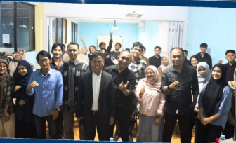

Makassar, 19 Mei 2026 – Universitas Handayani Makassar menggelar kegiatan Rapat Sosialisasi Penerimaan Mahasiswa Baru (PMB) Tahun Akademik 2026/2027 sebagai langkah strategis dalam memperkuat koordinasi dan kesiapan seluruh civitas akademika dalam menghadapi proses penerimaan mahasiswa baru.
Kegiatan yang berlangsung di lingkungan kampus Universitas Handayani Makassar tersebut dihadiri oleh pimpinan universitas, dosen, staf, serta tim pelaksana PMB. Suasana rapat berlangsung interaktif dan penuh semangat, mencerminkan komitmen bersama dalam meningkatkan kualitas pelayanan pendidikan serta memperluas jangkauan informasi penerimaan mahasiswa baru kepada masyarakat.
Dalam kegiatan sosialisasi ini, berbagai hal penting dibahas, mulai dari strategi promosi kampus, mekanisme pendaftaran, pelayanan calon mahasiswa, hingga pemanfaatan media digital sebagai sarana publikasi dan komunikasi yang efektif.
Selain itu, peserta rapat juga diberikan pemahaman mengenai target dan program unggulan yang akan menjadi daya tarik Universitas Handayani Makassar pada tahun akademik mendatang.
Pihak universitas menegaskan bahwa kegiatan sosialisasi ini merupakan bagian dari upaya peningkatan mutu layanan pendidikan tinggi yang adaptif terhadap perkembangan teknologi dan kebutuhan masyarakat. Dengan persiapan yang matang, Universitas Handayani Makassar optimistis dapat menjaring calon mahasiswa yang berkualitas dan berdaya saing.
Melalui kegiatan ini, Universitas Handayani Makassar berharap seluruh tim PMB dapat bekerja secara sinergis dalam memberikan informasi yang akurat, pelayanan yang profesional, serta pengalaman terbaik bagi calon mahasiswa baru.
Universitas Handayani Makassar terus berkomitmen menjadi institusi pendidikan tinggi yang unggul, inovatif, dan berdampak bagi masyarakat, sejalan dengan semangat "Diktisaintek Berdampak" yang diusung Kementerian Pendidikan Tinggi, Sains, dan Teknologi Republik Indonesia.
kampus makassar, Mahasiswa Baru 2026, PMB2026, Sosialisasi PMB, Universitas Handayani Makassar